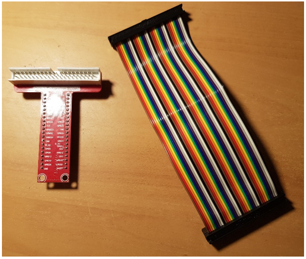

To be able to use the GPIO pins, you will need to connect your breakout board to the Raspberry Pi using the extension cable
1. Join the extension ribbon cable to the breakout board
2. Connect the other end of the ribbon to the GPIO pins of the Raspberry Pi
3. Next, connect the breakout board to the breadboard like so:
4. You will now have to boot up your Pi and change some settings. First click on the ‘Applications menu’
5. Hover over ‘Preferences’ and select ‘Raspberry Pi Configuration’
6. In the menu that follows, make sure that SSH, VNC and SPI are enabled. You can enable all of the interfaces if you would like but these three will be the only ones needed for the tutorials. The reason they are disabled is for security purposes.
To make the Raspberry Pi do things, you have to give it instructions. The most versatile and flexible way of doing this is through the use of the programming language, Python.
You can create python scripts on the Raspberry Pi’s operating system just like any other operating system such as Windows or macOS. Unfortunately, there aren’t as many user-friendly software options for writing the code. Unlike Windows or macOS, there is little support for Raspbian.
There is already a Python editor installed on the Raspberry Pi. But if you are genuinely new to Python programming, I would recommend practicing on some more user friendly, supportive editor options and copy or transfer the code to the Raspberry Pi. This can simply be done using a USB drive.
So how to access the built-in editor. Raspbian has Python 3.6 and 2.7 installed by default. We will be using the 3.5 version.
1. To access it, first open the application menu, hover over ‘programming’ and in the sub-menu select ‘Python 3 (IDLE)’.
2. The python shell will open. Click on ‘file’ then ‘New file’ this will open up the editor for you to start coding!
3. Once you have started writing code, it is important to save the file. So click ‘file’ then ‘save’. Do this early and do it often! You will also have to save your work each time you run the code if changes are made.
4. Finally, you’ve written some code, and you want to run it. There are a couple of ways to do this. The first is to click ‘Run’ ad then ‘Run Module’.
The other way to do it is through the command line. This must be done for more complex code that needs administrator permission to run. Using the ‘cd/’ command, you must input the file directory to the file. The example below shows pointing the command line to the directory ‘Documents’ and then using the command ‘Python3 [filename]’ where [filename] is the name you gave your file when you save it.
But wait! That wasn’t giving the OS permission to run the script with administrator permissions. To do that, use the command ‘sudo python3 [filename]’ instead. The difference is ‘sudo’ which is the command for ‘superuser do’.